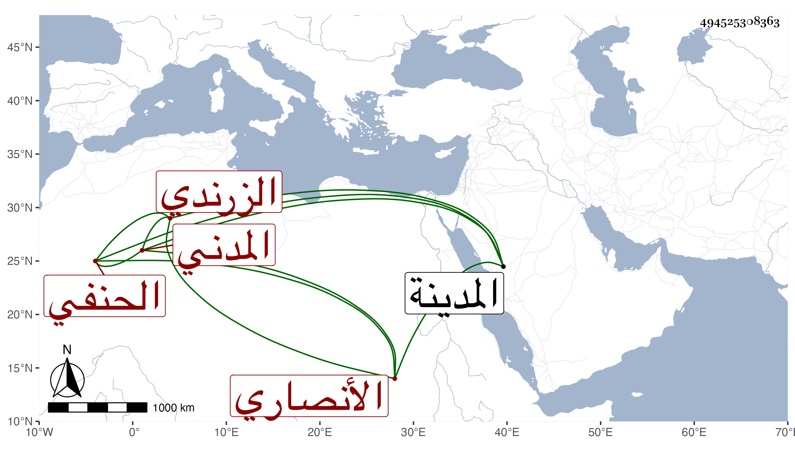

0902Sakhawi.DawLamic.ITO20230111-ara1.EIS1600.494525308363
Biography ID: 494525308363
391
أبو الفتح بن عبد الوهاب بن علي بن يوسف بن الحسن بن محمد بن محمود ابن عبد الله الأنصاري الزرندي المدني الحنفي واسمه محمد ولد بعد سنة ثمانين وسبعمائة بالمدينة الشريفة وحضر في سنة خمس وثمانين على سليمان السقا ثم سمع وأجاز له جماعة ومات بها في يوم الأحد رابع عشر ذي القعدة سنة ثمان وثلاثين وذكره البقاعي مجردا .
